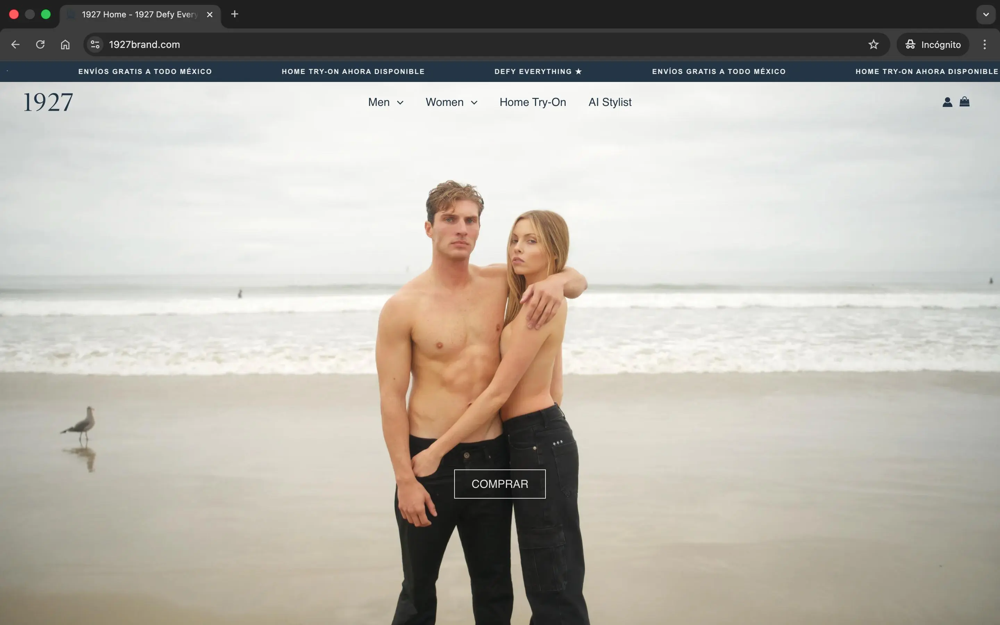
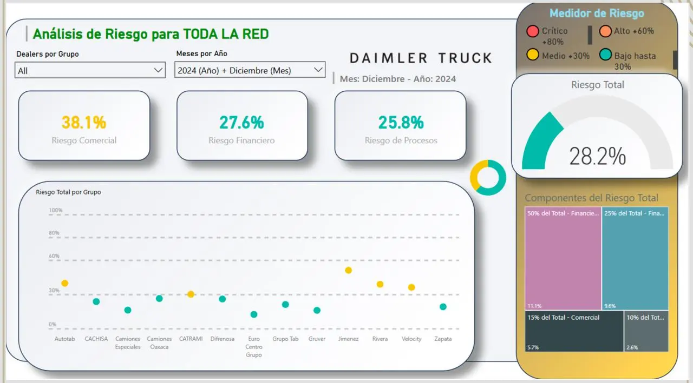
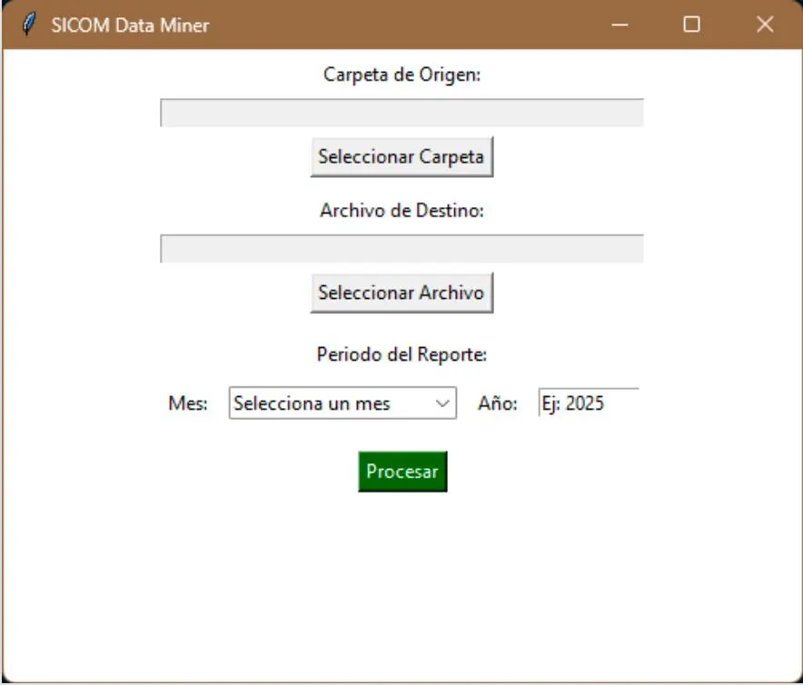
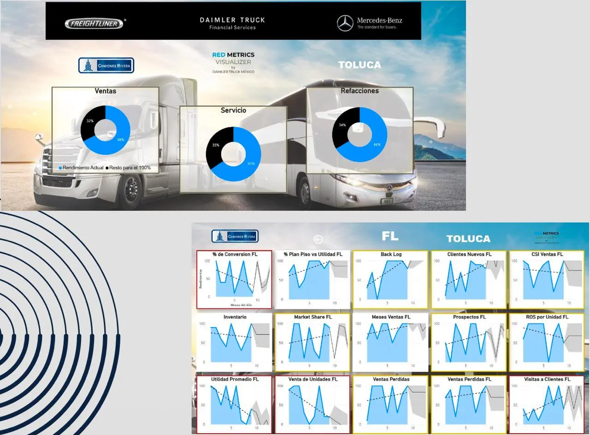

Soluciones construidas e implementadas en entornos corporativos y startups
One Moment Group (CTO) | Ago 2025 – Presente
Arquitectura y desarrollo completo de la plataforma ecommerce de la marca. Responsable del stack tecnológico, infraestructura cloud, automatizaciones y políticas de ciberseguridad.
Responsabilidades técnicas:

Clip (PayClip) | Jul 2025 – Presente
Sistema que automatiza el seguimiento del ciclo de vida de documentos GRC corporativos. Procesa PDFs en Google Drive, extrae fechas y metadatos clave con Gemini AI, y envía alertas de vencimiento vía Slack antes de que el equipo tenga que revisarlos manualmente.
Funcionalidades:
Resultado: El equipo GRC dejó de hacer seguimiento manual de más de 100 documentos. Desde la implementación no se ha reportado ningún documento vencido sin notificación previa.
Daimler Truck México | May 2024 – May 2025
El Comité de Análisis de Riesgos recibía datos de múltiples distribuidores en formatos distintos y los consolidaba a mano cada mes. RiskPulse estandarizó la captura, automatizó la consolidación y centralizó la visualización en Power BI.
Solución implementada:
Resultado: El proceso de consolidación que tomaba varios días al mes pasó a ejecutarse de manera automática. El comité accede a los datos actualizados en Power BI sin intervención manual.

Daimler Truck México | 2024
Aplicación desktop en Python para consolidar reportes SICOM. El proceso anterior requería abrir y copiar cada archivo comercial uno por uno; SICOM Data Miner selecciona una carpeta de origen y genera el archivo consolidado del periodo en segundos.
Funcionalidad: Selección de carpeta origen, procesamiento batch, validación de datos y generación de archivo consolidado por periodo con interfaz gráfica.

Daimler Truck México | 2024
Dashboard de KPIs para toda la red de socios de negocio. Visualización de métricas de ventas, servicio y refacciones segmentadas por distribuidor, con gráficas de tendencia por región e indicadores de conversión.
Resultado: Consolidó las métricas de toda la red de distribuidores en una sola vista, eliminando la necesidad de generar reportes manuales por región.

Azteca Construcciones Industriales | Ene – Ago 2021
Sistema cloud para seguimiento en tiempo real de recursos y avance de proyectos de construcción. Reemplazó el seguimiento en hojas de cálculo estáticas con una aplicación móvil conectada a Google Cloud Stack.
Stack: Google Sheets como base de datos, Google Drive para almacenamiento de documentos, AppSheet para la aplicación móvil de campo.
Resultado: El equipo de campo pasó de actualizar hojas de cálculo al final del día a registrar avances en tiempo real desde el sitio de construcción, reduciendo errores de captura y mejorando la visibilidad de los supervisores.